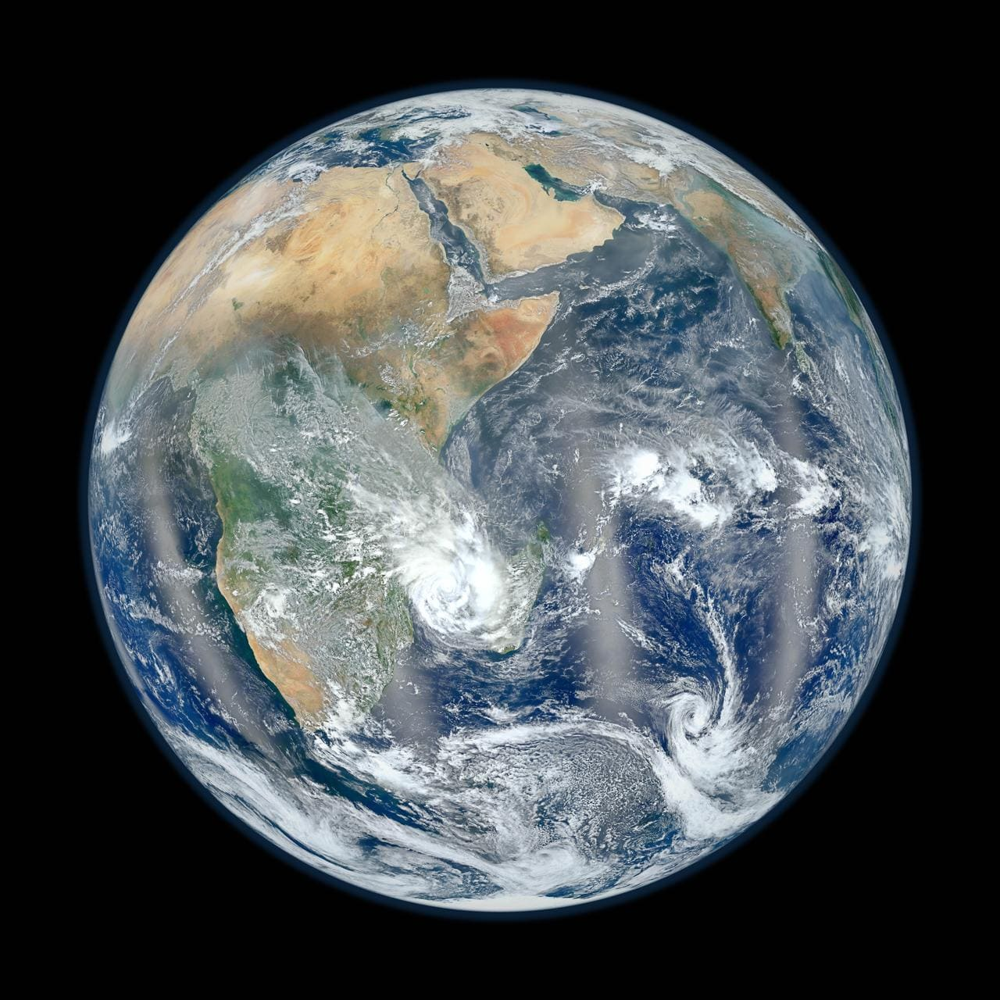
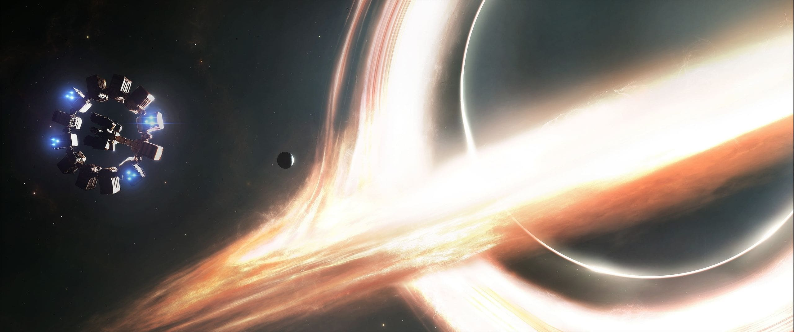
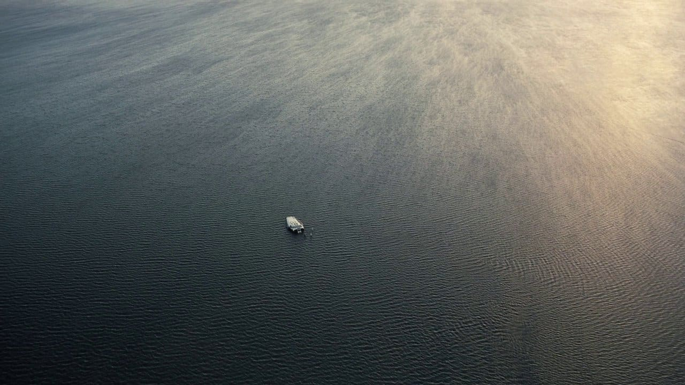
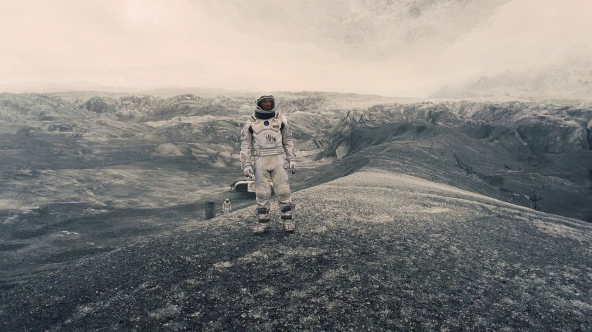
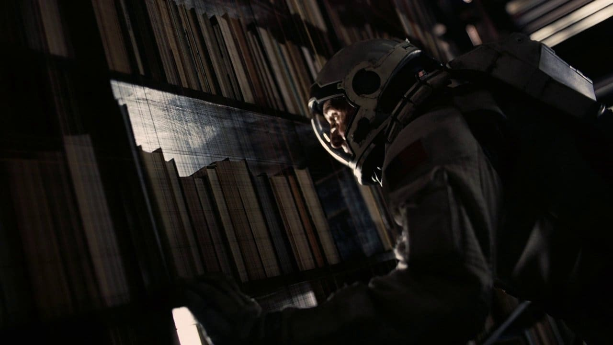

Mundos
Interstellar transcurre en cinco escenarios muy distintos: una Tierra que se apaga, tres planetas al otro lado de un agujero de gusano y una estructura imposible más allá del horizonte de un agujero negro. Esta es la guía de esos lugares: qué son, qué papel cumplen en la historia y qué los hace reconocibles a primera vista. La física real detrás de cada uno se cuenta en la sección La Ciencia.

La Tierra
Qué es
Nuestro planeta de origen, algunas décadas en el futuro. Un mundo que se apaga: una plaga silenciosa, el blight, arrasa cultivo tras cultivo, el maíz es casi lo único que todavía crece y enormes tormentas de polvo cubren pueblos enteros. La humanidad dejó de mirar a las estrellas para convertirse en una sociedad de granjeros de subsistencia.
En la historia
Es el punto de partida y el ancla emocional de toda la película. Cooper, un ex piloto reconvertido en agricultor, vive en una granja con sus hijos Murph y Tom. Desde esta Tierra sin futuro parte la misión Endurance, y es a esta Tierra —a la habitación de Murph— a la que Cooper intentará "volver" a través del tiempo.
Rasgos distintivos
- La plaga (blight): un patógeno que extingue especie por especie los cultivos.
- Tormentas de polvo recurrentes que sepultan casas, autos y campos.
- Una agricultura en colapso, con el maíz como último cultivo viable.
- Un mundo que abandonó la exploración: "ya no producimos nada nuevo, solo comida".
- La granja de los Cooper y la habitación de Murph, centro de todo el relato.

Gargantúa
Qué es
Un agujero negro supermasivo alrededor del cual orbitan los planetas que explora la Endurance. En pantalla se ve como una esfera perfectamente negra rodeada por un anillo de luz dorada —su disco de acreción— que parece envolverla por arriba y por abajo a la vez, un efecto de su enorme gravedad sobre la luz que pasa por detrás.
En la historia
Gargantúa domina el sistema al que conduce el agujero de gusano. Su cercanía es la que hace que en el planeta de Miller el tiempo corra a otra velocidad, y su horizonte es el destino de Cooper cuando decide soltarse de la nave para aligerar el peso en la maniobra final.
Rasgos distintivos
- Agujero negro supermasivo: el objeto central del sistema explorado.
- Un disco de acreción dorado que parece rodearlo por completo.
- Distorsión visual: las estrellas del fondo se curvan y se duplican en el borde.
- Un halo de luz casi simétrico, en lugar de la "sombra" clásica de un agujero negro.
- Su gravedad fija las reglas del sistema: qué planeta es habitable y cuánto cuesta bajar a él.

Planeta de Miller
Qué es
El primer mundo que pisa la tripulación tras cruzar el agujero de gusano. Un planeta cubierto por completo de agua de apenas un palmo de profundidad, bajo un cielo pálido. Lo que parecen montañas en el horizonte son en realidad olas: paredes de agua de cientos de metros que recorren el planeta sin detenerse.
En la historia
Miller está tan cerca de Gargantúa que el tiempo allí transcurre a otro ritmo: en la película, cada hora en la superficie equivale a siete años para quien espera en la nave. Una parada que debía ser breve se complica, y el costo son veintitrés años de la vida de Cooper: el golpe que marca para siempre su relación con Murph.
Rasgos distintivos
- Un océano global sin tierra firme, de muy poca profundidad.
- Olas del tamaño de montañas que cruzan el planeta de forma periódica.
- Proximidad extrema a Gargantúa: la causa de todo lo que ocurre allí.
- Una gravedad algo mayor que la terrestre, que vuelve lento cada movimiento.
- Los restos de la estación de Miller: la misión anterior ya había fracasado.

Planeta de Mann
Qué es
Un mundo helado, envuelto en nubes tan frías que están congeladas y sobre las que se puede llegar a caminar. La superficie es una llanura de hielo y roca bajo una luz tenue, sin nada vivo a la vista.
En la historia
Es el planeta del que siguen llegando señales positivas, así que la Endurance pone rumbo allí. El doctor Mann, el astronauta más condecorado de la misión Lázaro, espera en hibernación. Lo que la tripulación encuentra al despertarlo cambia por completo el rumbo de la película.
Rasgos distintivos
- Superficie de hielo y roca, con temperaturas bajo cero extremas.
- Nubes congeladas: estructuras sólidas suspendidas sobre el suelo.
- Aparente habitabilidad: los datos lo señalaban como el mejor candidato.
- Sin vida ni recursos evidentes en la zona explorada.
- El campamento de Mann y su cápsula de hibernación como único rastro humano.

El Tesseract
Qué es
Una estructura de más dimensiones que las tres habituales, a la que Cooper llega tras cruzar el horizonte de Gargantúa. Desde adentro se ve como una retícula infinita de habitaciones repetidas: son todos los instantes de la habitación de Murph, uno junto a otro, como si el tiempo fuera un pasillo que se puede recorrer.
En la historia
Es el corazón del giro final. Cooper descubre que desde allí puede influir en el tiempo —mover la aguja de un reloj, empujar libros de un estante— y usa esa retícula para enviarle a Murph, ya adulta, los datos que salvarán a la humanidad. El "fantasma" que Murph veía en su cuarto al principio de la película era él.
Rasgos distintivos
- Una retícula que representa el tiempo como un espacio recorrible.
- Copias infinitas de la habitación de Murph, cada una en un momento distinto.
- Construido —según la película— por una humanidad futura para hacer posible ese contacto.
- La estantería de Murph vista "desde atrás": el único punto de comunicación.
- El reloj de pulsera como canal del mensaje final, en código.